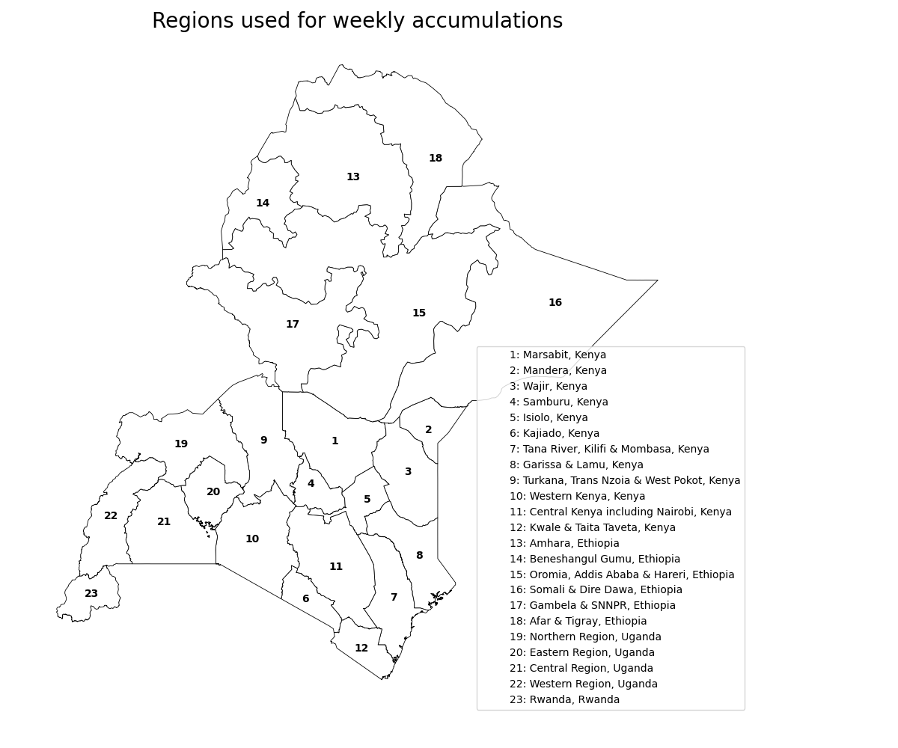

Model: : The ECMWF ECWMF IFS sub-seasonal range forecast at 1 degree resolution is aggregated to weekly mean regional means at the admin 1 level (some small regions are merged), then post-processed using isotonic distributional regression (IDR) trained on IMERG v7 to produce forecasts of 7d rainfall intervals. Model version 1. Trained on all hindcasts from 2004-2025 inclusive.
Region: Initialisation: Valid: Value threshold: mm/week. Probability threshold: %.
Status
